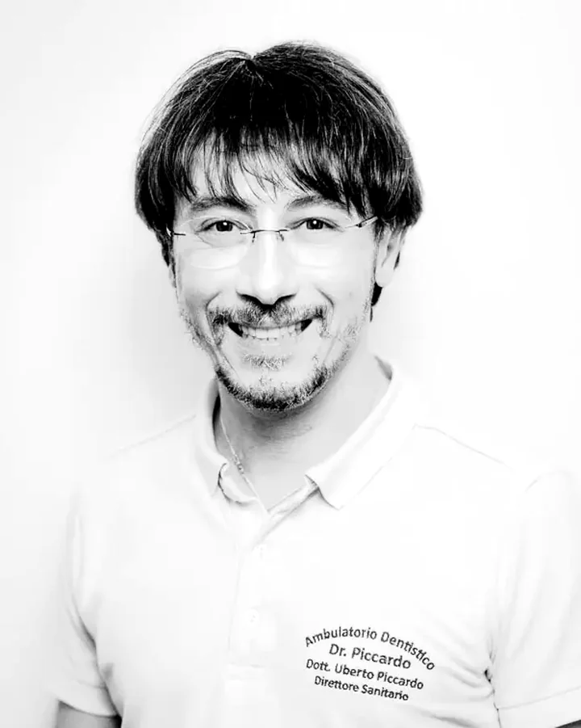

Sedazionista in clinica universitaria
Master di II livello in Sedazione ed emergenze in odontoiatria all'Università di Padova (2014-15), dove il Dott. Piccardo ha poi operato come sedazionista nella clinica universitaria.
Sedazione cosciente inalatoria, sedazione endovenosa e comunicazione ipnotica sono tre tecniche distinte, che si scelgono in base a quanto è forte l'ansia e a quanto durerà l'intervento. Il Dott. Piccardo le pratica dopo un master universitario di secondo livello in sedazione ed emergenze conseguito all'Università di Padova, dove ha poi lavorato come sedazionista nella clinica odontoiatrica.
Maschera per sedazione cosciente, still life
Luce morbida e fondo neutro caldo, mascherina appoggiata e non indossata.
L'odontofobia si comporta come una risposta appresa, non come un tratto del carattere. Quasi sempre nasce da un'esperienza reale: un'anestesia che non ha funzionato, un medico che non si è fermato quando era il momento, un dolore da bambini. Il corpo la registra e la ripropone ogni volta che sente il rumore del riunito. Chiedere a una persona di «farsi coraggio» equivale a chiederle di sopprimere un riflesso: nella pratica non funziona quasi mai, e in compenso aggiunge un senso di inadeguatezza a una paura che c'era già.
Trattiamo l'ansia come un parametro clinico. Prima di qualsiasi cura decidiamo insieme quale livello di sedazione serve, esattamente come si decide il tipo di anestesia. Non la riserviamo ai casi difficili: puoi chiederla anche per una semplice seduta di igiene, e succede spesso.
La sedazione cosciente inalatoria è una miscela personalizzata di ossigeno e protossido d'azoto. Resti sveglio, rispondi, collabori. Ma non ti importa.
In prima visita si stabilisce il livello di sedazione, si escludono controindicazioni e si spiega esattamente cosa sentirai. Nessuna sorpresa: è metà del lavoro.
Appoggiata sul naso, respiri normalmente. Nel giro di 2–3 minuti arriva una sensazione di leggerezza e distacco. Continui a sentire e a rispondere.
La percentuale viene regolata durante l'intervento. Il protossido innalza la soglia del dolore e potenzia l'effetto dell'anestetico locale, che resta comunque il cardine dell'analgesia.
Cinque minuti di ossigeno puro alla fine della seduta. L'effetto svanisce completamente: puoi guidare e tornare al lavoro. È la differenza principale rispetto all'anestesia generale.
Master di II livello in Sedazione ed emergenze in odontoiatria all'Università di Padova (2014-15), dove il Dott. Piccardo ha poi operato come sedazionista nella clinica universitaria.
Oltre all'inalatoria, lo studio pratica l'ansiolisi orale con benzodiazepine, per chi ha bisogno solo di arrivare tranquillo, e la sedazione cosciente endovenosa, gestita direttamente senza appoggiarsi a un anestesista esterno.
Diploma di Ipnologo (CIICS Torino, 2017) e socio del Centro Italiano di Ipnosi Clinica Sperimentale. La comunicazione ipnotica riduce l'ansia prima ancora che serva un farmaco.

Direttore Sanitario · Chirurgo orale, implantologo, protesista, sedazionista
Fondatore dello studio. Cinque master universitari di II livello, oltre 4.000 impianti osteointegrati e la sedazione cosciente praticata con una formazione universitaria dedicata.
Dopo la prima visita ricevi un preventivo scritto con le lavorazioni una per una, i tempi previsti e il totale, alle cifre del tariffario pubblico.
IVA esente ai sensi dell'art. 10 DPR 633/72. Detraibile al 19% nella dichiarazione dei redditi.
No, ed è il punto. La sedazione cosciente non è anestesia generale: rimani sveglio, respiri da solo, senti le voci e rispondi alle domande. Cambia la reazione emotiva a ciò che accade, non la coscienza.
È la tecnica di sedazione con il più lungo storico d'uso in odontoiatria e l'effetto si esaurisce in pochi minuti con ossigeno puro. Ossigeno e protossido non sono infiammabili né esplosivi. Come per qualsiasi atto medico, esistono controindicazioni: si escludono nel colloquio preliminare.
In genere no: dopo i minuti di ossigeno puro finali si torna alla normale attività. Per la sedazione endovenosa le indicazioni sono diverse e vengono date caso per caso.
Sì, ed è una delle indicazioni principali. Con un bambino che non collabora, insistere serve a poco; molto meglio metterlo nelle condizioni di riuscirci. La dott.ssa Tuo lavora con la pedodonzia e, quando serve, con la sedazione.
Dillo quando chiami: la sedazione si può concordare già per la prima seduta, e non serve aspettare di essere un paziente abituale. Nel frattempo sala d'attesa, sala raggi e zone operative sono tutte su Google Street View: arrivare in un posto già visto è meno faticoso.
Sì. La sedazione non sostituisce l'anestesia locale, la rende sopportabile: e, potenziandola, spesso più efficace. Il ricordo di «anestesie che non funzionavano» spesso nasce proprio da un'ansia che alzava la percezione del dolore.
Un'ora ogni sei mesi con igienisti laureati. L'unico trattamento che fa risparmiare invece di costare.
Denti del giudizio inclusi, estrazioni difficili, parodontologia e innesti. Con TAC 3D e chirurgo dedicato.
La prima volta si guarda, si conta e si torna a casa. Perché abbia voglia di tornarci anche fra vent'anni.
Comprende l'esame completo della bocca, le radiografie se servono, la diagnosi e il piano di cura scritto con tutti i costi.
Lunedì – Sabato · 8:00 – 20:30 · Via Maragliano 5, Genova · 3 posti auto gratuiti